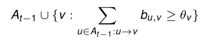

Communities and Information Diffusion¶
Latent Space Embeddings¶
Graph Drawing¶
Graph drawing/layout algorithms: map vertices to (x, y)-coordinates, so that graph plotted with nodes at coordinates “looks nice”, “reveals structure”, etc.
A standard clustering algorithm (e.g. kmeans) applied to the x, y-coordinates of the nodes will return clusters that correlate with communities
Problem Transformations¶
From Graph Clustering to Euclidean Clustering¶
Given graph G,
- find embedding of nodes in d-dimensional Euclidean Space \R^d
- apply clustering algorithm for \R^d-data
From Any Clustering to Graph Clustering¶
Given data points x_1, \dots, x_N (any data space),
- define a distance measure d(x_i, x_j) between data points
- construct distance matrix D=(d(x_i, x_j))_{i,j} or some variant
- graph-cluster D (possibly via embedding in Euclidian space: Spectral Clustering)
From Graph Clustering to Distance-based clustering¶
Given graph G,
- Define a graph-distance measure d(v_i , v_j) between vertices
- Apply any clustering algorithm that operates on a distance matrix (e.g., hierarchical clustering)
Clustering by Matrix Factorization¶
Adjacency Matrix¶
- G is directed or undirected.
- A symmetric if G undirected.
Interpretation as linear mapping:
A (column) vector \bold x \in \R^n can be interpreted as a potential or weight function on nodes. The mapping A: \bold x \mapsto A \bold x transforms the potential: $$ (A\bold x)i = \sum {j:(i,j) \in E} x_j $$
Alternatively for row vector \bold x^T:
Illustration¶
Potentials (non-negative) represented by colored boxes:
Eigenvectors and Eigenvalues¶
\bold x is eigenvector with eigenvalue \lambda if A\bold x = \lambda \bold x
Example
Eigenvectors and -values for triangle graph:

Example
Collection of cliques:

- The largest eigenvalue is the size (degree) of the largest clique minus one. The corresponding eigenvector is the indicator vector for the clique.
- Indicator vectors for other cliques are eigenvectors with eigenvalues equal to the size of the cliques minus one.
Laplacian Matrix¶
The Graph Laplacian
- A: adjacency matrix of undirected graph
- D: diagonal degree matrix: d_{i,i} = \sum_{j=1}^n a_{i,j}
the (unnormalized) Laplacian is
Properties
-
L is symmetric, and \sum_{j=1}^n l_{i,j} = \sum_{j=1}^n l_{j,i} = 0
-
The constant vector \bold e = (1,\dots,1) is an eigenvector of L with eigenvalue 0.
-
If V' \subset V is a connected component, then the indicator vector for V'
- (\bold e_{V'})_i = \left\{ \begin{array}\ 1 & \text{if } v_i \in V' \\ 0 & \text{if } v_i \notin V' \end{array} \right .
is an eigenvector of L with eigenvalue 0
-
L is positive semi-definite
[U. von Luxburg: A tutorial on spectral clustering. Stat. Comput., 2007 ]
Connected Components¶
Connected components and eigenvectors:

- L: Laplacian, arranged so that connected components are contiguous blocks
- \bold e_{V'}: indicator vector of "middle" component
- \bold 0: 0-vector
SVD for L¶
SVD for Laplacian matrix (special case for quadratic, symmetric, positive semi-definite matrices):
- V: matrix of orthogonal eigenvectors
- D: diagonal, containing non-negative eigenvalues (in increasing order)
Zachary Example: Laplacian¶

Zachary Example: Adjacency¶

Information Diffusion¶
Information diffusion in a (social) network:
Network: possibly heterogeneous with web page nodes, user nodes, . . .
Information:
- retweets
- hashtags
- internet rumours
Some assumptions:
- can identify the “same piece of information” being adopted/shared/propagated across the network
- information “spawned” at one or several nodes, and then propagated along links
Prediction Problems¶
Given the trace of an information cascade so far:
How far is this going to spread?
[Cheng, Justin, Lada Adamic, P. Alex Dow, Jon Michael Kleinberg, and Jure Leskovec. "Can cascades be predicted?." In Proceedings of the 23rd international conference on World wide web, pp. 925-936. 2014.]
Which are the most effective spawning nodes for spreading a piece of information?
[Kempe, David, Jon Kleinberg, and Éva Tardos. "Maximizing the spread of influence through a social network." In Proceedings of the ninth ACM SIGKDD international conference on Knowledge discovery and data mining, pp. 137-146. 2003.]
Cascade Prediction¶
This section based on:
Cheng, Justin, Lada Adamic, P. Alex Dow, Jon Michael Kleinberg, and Jure Leskovec. "Can cascades be predicted?." In Proceedings of the 23rd international conference on World wide web, pp. 925-936. 2014.
Data
From Facebook: “Sharing cascades” of images observed over a 28 day period in 2013
- at least 5 reshares for each photo
- initial node can be either:
- "page" (81%): company etc. accounts
- "user" (19%): individual users
One cascade:

Image source: [Cheng et al., 2014]
- \hat G: cascade graph - nodes and edges along which information was transmitted
- G': induced sub-graph – same nodes as \hat G, but also including the edges on which information was not transmitted.
Wiener Index¶
For any graph G = (V,E) with |V|=n
Image source: [Cheng et al., 2014]
Interpretation: higher Wiener index ∼ more viral cascade (passes across different communities)
Data Statistics¶
Complementary cumulative distribution functions for size and Wiener index of cascades:
Image source: [Cheng et al., 2014]
$CCDF(x) = $ fraction of cases (=cascades) that have a value (of Cascade size, Wiener index) above x.
- We observe power laws for both distributions
- I Page induced cascades are larger but less viral than user induced cascades.
Predicting Cascade Growth¶
Given
- the observation of a cascade of current size k
Question
-
how big will it grow?
-
Problem: default answer “not much bigger than it is now” has high accuracy
Question Adapted
- Will it reach size 2k? (about half of cascades of size k will reach size 2k.)
Approach
- Define a number of features f_1, f_2, \dots, f_m describing the currently observed size k cascade
- Use standard logistic regression model to predict ≥ 2k target
- Separate prediction model for each k
Logistic Regression
Learn weights w_0, \dots, w_m, and predict \geq 2k to be true for cascade C if
-
w_0 + w_1f_1(C) + \dots + w_mf_m(C) > 0
-
the absolute values of the weights are a measure for the importance of the features.
Image Features¶

Poster Features¶
- Page vs. user poster
- Number of friends
- Demographic info and Facebook use statistics
- ...
Resharer Features¶
Similar features for the re-sharers up to now
Cascade Structure¶
- Out-degree of ith re-sharer in cascade graph \hat G(i=1, \dots, k)
- Out-degree of ith re-sharer in induced graph G'(i=1, \dots, k)
- Number of edges in G'
- ...
Temporal Features¶
- Various features derived from the time stamps of the first k re-shares
All features only depend on the observed cascade, not the network structure beyond the cascade.
Results - Predicting Size¶
Results with logistic regression for k = 5 using different feature sets:

- Temporal features most informative
Further results:
- Accuracies improve (slightly) for larger k
- For larger k, relevance of cascade features increases, relevance of content/user features decreases.
Results - Predicting Wiener Index¶
Task
- given cascade of size k = 5, predict whether Wiener index of final cascade is above the median value
Results
- Obtained accuracy of 0.725
- Temporal and structural features most informative
Influence Maximization¶

Diffusion Models¶
Model-based analysis:
- Define (realistic) stochastic model for the diffusion of information in a network
- Formulate precise objective
- Optimize objective under the assumptions of the model
Terminology:
- Distinguish active and inactive users
- In the diffusion process, inactive graph neighbors of active nodes can become active
Linear Threshold Model¶

- Assume: edges u \to v are associated with weights b_{u,v}, such that for all v
- Edge weights indicated by grayscale values in picture.
- At time t = 0 an initial set A0 of nodes is active
- indicated by blue colors

-
Every node v randomly chooses a threshold θ_v uniformly from the interval [0,1].
- Thresholds indicated by red-scale values in picture
-
For t = 1, 2, \dots>: the set of nodes active at time t is



Independent Cascade Model¶

- Assume: edges u\to v are associated with probabilities p_{u,v} \leq 1.
- Edge probabilities indicated by grayscale values in picture.
- At time t=0 an initial set A_0 of nodes is active
- For t=1,2,\dots: each node u\in A_{t-1} \backslash A_{t_2} (but not A_{T_2}) activated at time t-1 activates its inactive neighbors with probability p_{u,v} A_t=A_{t-1} \cup \{v : v \text{activated at time } t\}

- Nodes cannot "keep trying" to activate nodes
Similarities and Differences¶
Edge Parameters
- Both models assume weights/probabilities on the edges
- These numbers will not be explicitly given by the network, but can potentially be learned from observations of information cascades
- E.g. in social network, no-one has labeled edges with numbers
- Facebook or Twitter would know, e.g. how much a user retweets from another user
- E.g. in social network, no-one has labeled edges with numbers
- Otherwise, run the models with default parameters
Activating the neighbors
- Independent cascade: one-shot opportunity of a newly activated node to also activate its neighbors
- The more of your neighbors get active, the higher the chance of you becoming active
- Linear threshold: a node can always contribute to the activation of neighbors if sufficiently many other nodes become active.
Influence¶
Both diffusion models lead to a final set of activated nodes at the time t where:
Each seed set A induces a probability distribution over A_{final} sets obtained in random cascades:
- Linear Threshold: randomness induced by random choice of thresholds (new in every run)
- Independent Cascade: randomness induced by random propagation according to edge probabilities
For any diffusion model:
Influence: Definition
For seed set A\subset V define influence \sigma(A) as the expected size of A_{final} in cascade started with A_0=A
Influence: Computation
For a given A, \sigma(A) can be hard to compute.
- Typically approximate by simulations.
Influence: Optimization
The influence maximization problem: find the set A_{opt} with |A_{opt}|=k, such that \sigma(A_{opt}) is maximal among all size k sets
- Inputs:
- Graph (V,E),
- Edge weights/probabilities
- k
Influence Maximization Problem¶
The influence maximization problem for the independent cascade model is NP-hard.
Set Cover Problem¶
The Set Cover problem is a known NP-complete problem: given
- a set U of size n
- a collection of m subsets S_1, \dots, S_m of U
- a number k\leq m
do there exist k of the subsets S_i such that their union is U?
Reduction¶
The Set Cover problem can be reduced to influence maximization: given an instance of the Set Cover problem, construct bipartite graph

Edges directed from sets S_i to elements of U they contain. All probabilities set to p_{u,v} = 1.
Then: exists size k set cover, if and only if \sigma(A_{opt})=n+k
- Similar result for linear threshold model
Greedy Optimization¶
Heuristic approximation technique (either linear threshold or independent cascade):

Approximation Guarantee¶
The influence value \sigma(A_{greedy}) obtained via greedy optimization is at least:
- General guarantee for optimization of submodular functions:
- if A \subset A' then for all u:

- ("law of diminishing returns")
An Experiment¶
Data: collaboration network (arXiv high energy physics): 10748 nodes, 53000 edges)
Comparing values σ(A) in linear threshold model obtained by greedy optimization vs. simpler alternatives:

- high degree: select nodes with highest out-degree
- central: select nodes according to minimal average distance to other nodes
- random: random